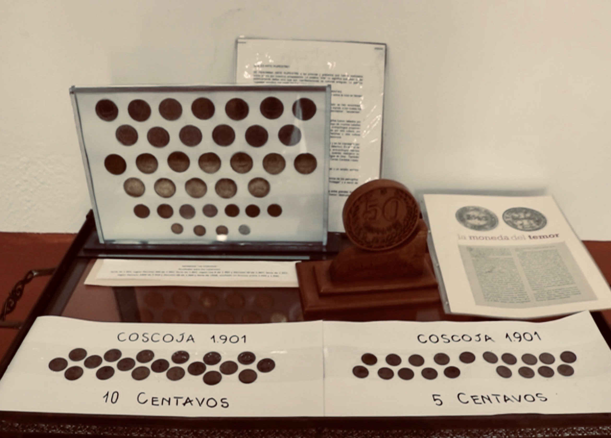
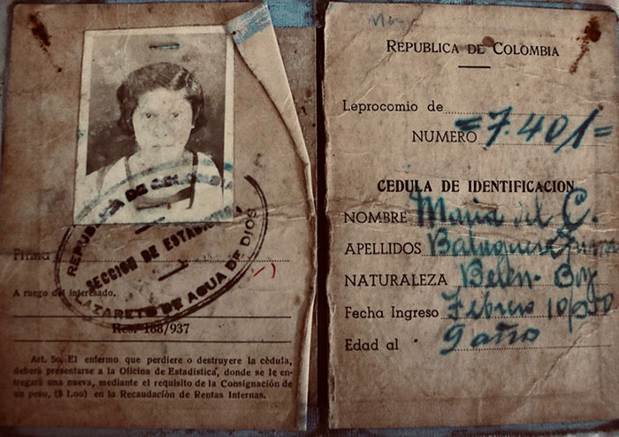

Ante el miedo que generaba la lepra en el país por falta de un conocimiento científico que ayudará en la toma de decisiones y soluciones para disminuir lo que era escandaloso, el gobierno desde un comienzo dio forma y sentido a lo que se entiende por discriminación social. Pues desde los años 1900 en adelante, gobiernos como el de el ex presidente Jóse Manuel Marroquín (1900 - 1904 ) y el ex presidente General Rafael Reyes ( 1904 - 1907), dieron paso a la afectación de los derechos fundamentales de las personas con Hansen, una vez se implementaron políticas que intentaron por todos los medios evitar la interacción y el contacto entre sanos y enfermos. Estas políticas sin remordimiento alguno, sentenció la vida del enfermo dejándolo en la exclusión y no participción dentro de la vida pública.
Moneda que utilizaron enfermos de lepra. Foto: Museo de la lepra, Agua de Dios.
Pero no bastó la tortura de los enfermos ya que al agotarse las opciones, el gobierno intervino en la economía e interrumpió la circulación de la moneda nacional en los lazaretos tras pensarse que podía ser también, un patrón de contagio que, de manera invisible, afectaría la imagen del país por su interacción. Por lo que decidió legalizar una nueva e independiente moneda llamada Coscoja. “Los que estábamos acá adentro no podían tocar los billetes del Banco de la Republica, por el miedo a que el billete salía y se contagiarán los sanos”, explica el periodista Jaime Molina.
Y que por lo tanto, no está del todo en lo incierto cuando por suerte se conoció el testimonio de Esther Balaguera, la mujer que con los años que lleva viviendo en el albergue San Vicente, tuvo sobre sus manos aquella moneda niquel que no circuló en el resto del país, explica con tono agudo y ronco que, al dificultar la conversación pero no la comprensión del diálogo, llegó a la edad de los nueve años un 10 de febrero de 1950 para nunca más regresar a su tierra, debido a que a sus 78 años de edad, no hay familia que la espere en Duitama, Boyacá.
Estas monedas según Hernán Moya, archivista del edificio Carrasquilla (Sanatorio de Agua de Dios) ayudó a los pacientes en el costeo de sus necesidades básicas como lo fue el vestuario y la alimentación.
Sin embargo, hay no termina la exclusión de los pacientes porque al ingresar, se les asignó también, una nueva identidad. En la que si se sigue con la historia de Esther, ella mientras intenta lidiar con la tos que desde joven la acompaña por una infección pulmonar que no cuidó, dirige sus pasos hacía el interior de su habitación para sacar de su armario, el cofre de madera donde reposa el documento de identidad que marcó su piel. Un documento fisurado color sepia que no borra la palabra leprocomio.
Esta identificación dejo de funcionar a partir del 22 de diciembre de 1962, gracias a los avances científicos que constataron no solo lo que muchos intentaban comprobar `la lepra no es contagiosa´, sino que además, permitió vincular a Agua de Dios con el resto del país.
Un año que pacientes lo glorifican tras relacionarlo con el fin del exílio una vez, se conoció que las tierras de Agua de Dios fue propiedad de Manuel Murillo Toro fundador de las telecomunicaciones en el país, pero fueron vendidas al Estado para dar inicio a toda una violación de derechos humanos en la que, aparte de generar un desplazamiento forzado, vulneró la integridad y dignidad del enfermo que no tenía la manera de comprobar que su enfermedad no era contagiosa.
Pues estaba vigilado por un control policial y encerrado por un cordón sanitario que consistía en 14 o 15 hiladas, lo que imposibilitó el ingreso de sanos y dificultó la salida de enfermos. Ese encierro es para el periodista Molina, el mismo caso que ocurrió con los militares y civiles secuestrados por parte de las FARC.
Retenes que encerraron el municipio de Agua de Dios para evitar la salida del enfermo a la vida civil.
Dichas políticas son para Andrea Garzón, abogada y especialista en Derechos Humanos, un atentado contra la vida del enfermo al reflejarse la participación e intención que tuvo el Estado en excluir y generar en la sociedad, la zozobra de que el paciente de Hansen no es una persona digna a tratar.
Sin embargo, luego de los años sin respuesta y la espera sin salida que determinará la patología de la enfermedad, la Organización Mundial de la Salud (OMS) como milagro hecho realidad tras las constantes velas encendidas que enfermos de Hansen suplicaban al cielo, determinó que la lepra no es una enfermedad contagiosa y por lo tanto, es curable. Dicha afirmación dio punto final los imaginarios y políticas dfiscriminatorias cuando el ex presidente Lleras Camargo mediante la ley 148 de 1961 rompió las cadenas de la libertad. Unas cadenas que por el tiempo de uso y el constante sol que se posó durante casi un siglo (1870 – 1961); fue en términos físicos la luz verde que habilitó el paso y permitió por primera vez dar bienvenida a aquellos que sin importar ser colombianos, no podían ejercer ni disfrutar de sus derechos. Sin embargo, romper esas cadenas como símbolo histórico y material no fue del todo la cura inmediata de la lepra cuando reemplazar el nombre de lazareto a municipio de Agua de Dios no bastó para curar tampoco, la enfermedad de la discriminación.
Pues luego de 58 años que lleva Agua de Dios sosteniendo el título de municipio, personas con Hansen dentro del territorio siguen afrontando el rechazo social y el estigma que esta tierra posee.